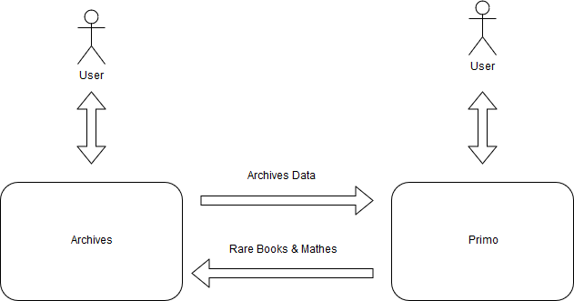

<!doctype html>
<html lang="en">
    <head>
        <meta charset="utf-8">
        <meta name="viewport" content="width=device-width, initial-scale=1.0, maximum-scale=1.0, user-scalable=no">

        <title></title>
        <link rel="stylesheet" href="./css/reveal.css">
        <link rel="stylesheet" href="./css/theme/black.css" id="theme">
        <link rel="stylesheet" href="./css/highlight/zenburn.css">
        <link rel="stylesheet" href="./css/print/paper.css" type="text/css" media="print">


    </head>
    <body>

        <div class="reveal">
            <div class="slides"><section  data-markdown><script type="text/template">
<style>
#fLeft {float: left; max-width: 60%; text-align: left;}
#fRight {float: right; max-width: 40%; text-align: left;}
#fRight img {margin: 20px;}
#smallLink {font-size: 18px;}
.whitebg {background-color: #fff; margin-top: 30% !important; padding: 15px !important; border-radius: 15px;}
.altText {background-color: #fff; bottom: 30px; position: fixed; padding: 15px !important; border-radius: 5px;}
section {height:100%;}
.pullDown {height:auto;}
.reveal h1, h2, h3, h4, h5 {text-transform: none !important;}
</style>

## Overview of New Special Collection Systems
* Big picture, What and Why
* What resources are here
* Some basic examples
* More in-depth demos
    * Subject Librarians last week
    * Reference staff next Wednesday, April 3rd at 11am in Special Collections
</script></section><section  data-markdown><script type="text/template">
## Disambiguation
* Purposely unbranded, “Search the Archives”
* What this is?
	* Technology for the Espy Project
	* One of the deliverables, but not the content
 
 <br/>
 
* Quicksearch
    * Discovery Layer
* ArcLight
    * Archives Metadata (Finding Aids)
* Hyrax
    * Digital Repository
</script></section><section  data-markdown><script type="text/template">
## Where is this?
* It’s our website
* library.albany.edu/archive
* archives.albany.edu
    </script></section><section  data-markdown><script type="text/template">
## One Search for Special Collections
* Official University Records
* New York Political Collections
* Death Penalty Collections
* German Émigré
* all other manuscript collections
	* Except Rare Books and Mathes
</script></section><section  data-markdown><script type="text/template">
## What can I find?
* Finding aids, digital content, everything from Luna
	* Records of collections, file series, individual folders
	* Digitized materials
	* Born-digital Materials
    * PDFs, Office documents
    * Images
    * Audio and Video
* Full Text search of digitized and born-digital records
* Web Archives
* Will soon include digitized Espy Papers
</script></section><section  data-markdown><script type="text/template">
## What can I find?
* Albany Student Press
* Senate Bills
* University Photographs
* WAMC Shows
* CSEA and UUP photos and publications
* Capital Punishment Clemency Petitions

</script></section><section  data-markdown><script type="text/template">
## How do I Navigate?

</script></section><section  data-markdown><script type="text/template">
## Extensible Access
Searching digital objects

&darr;

Requesting individual items

&darr;

Planning long term research
</script></section><section  data-markdown><script type="text/template">
## Requests and On-Demand Digitalization
* Requires minimal metadata
* Backend for uploading and reviewing
* Don't know demand
* Don't have established policies

</script></section><section  data-markdown><script type="text/template">
## Downloading, Linking, Embedding, Searching

* Download all online items
* URIs are persistent for linking and citing
* Embed content in any website
* Embed specific sub searches
[https://library.albany.edu/archive/use](https://library.albany.edu/archive/use)
</script></section><section  data-markdown><script type="text/template">
## Licensing and Rights

* All online items have license or rights statement
    * [Public domain](https://archives.albany.edu/concern/images/h415ph65z)
    * [CC-BY-NC-ND](https://archives.albany.edu/concern/images/vh53x3089)
    * [Educational Use Permitted](https://archives.albany.edu/concern/images/028713142)
</script></section><section  data-markdown><script type="text/template">
## Archives, Catalog, and Primo


</script></section><section  data-markdown><script type="text/template">
## Future Plans

* More Content!
    * Yearbooks
    * updated Senate and Provost records
    * More WAMC shows
* Data Clean up from past reference
* Digitize on-demand
* Future grants
* Smaller projects
    * Commencement programs
    * Senate bills
* UX improvements

</script></section></div>
        </div>

        <script src="./lib/js/head.min.js"></script>
        <script src="./js/reveal.js"></script>

        <script>
            function extend() {
              var target = {};
              for (var i = 0; i < arguments.length; i++) {
                var source = arguments[i];
                for (var key in source) {
                  if (source.hasOwnProperty(key)) {
                    target[key] = source[key];
                  }
                }
              }
              return target;
            }

            // Optional libraries used to extend on reveal.js
            var deps = [
              { src: './lib/js/classList.js', condition: function() { return !document.body.classList; } },
              { src: './plugin/markdown/marked.js', condition: function() { return !!document.querySelector('[data-markdown]'); } },
              { src: './plugin/markdown/markdown.js', condition: function() { return !!document.querySelector('[data-markdown]'); } },
              { src: './plugin/highlight/highlight.js', async: true, callback: function() { hljs.initHighlightingOnLoad(); } },
              { src: './plugin/zoom-js/zoom.js', async: true },
              { src: './plugin/notes/notes.js', async: true },
              { src: './plugin/math/math.js', async: true }
            ];

            // default options to init reveal.js
            var defaultOptions = {
              controls: true,
              progress: true,
              history: true,
              center: true,
              transition: 'default', // none/fade/slide/convex/concave/zoom
              dependencies: deps
            };

            // options from URL query string
            var queryOptions = Reveal.getQueryHash() || {};

            var options = {"transition":"fade"};
            options = extend(defaultOptions, options, queryOptions);
        </script>


        <script>
            Reveal.initialize(options);
        </script>
    </body>
</html>
